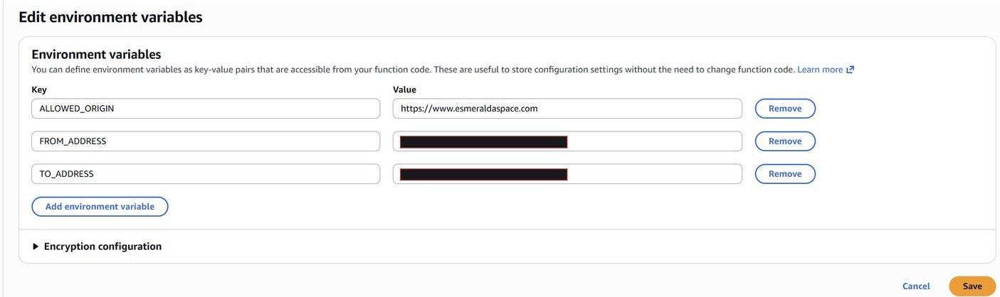
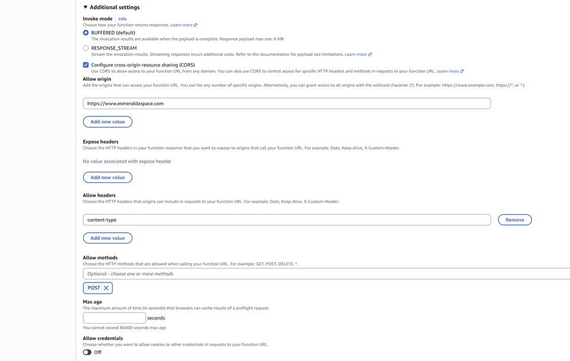
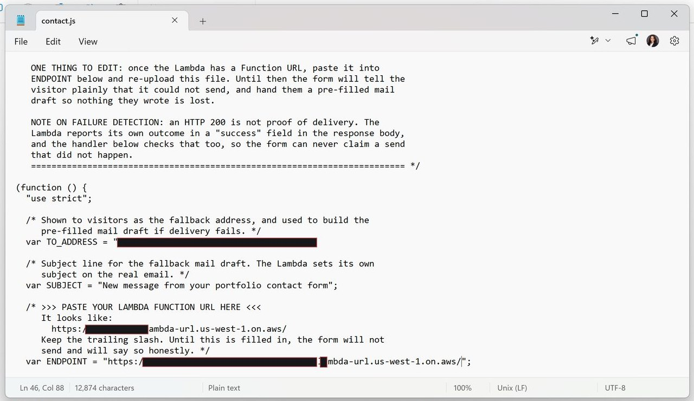

Thesis
A static site cannot hold a secret
So the backend has to be somewhere else, and it has to be honest about what happened.
The portfolio is a static site: HTML, CSS and JavaScript in an S3 bucket, served through CloudFront. That architecture is fast, cheap and very hard to break. It also has no process running anywhere that can receive a POST, no runtime, and no way to hold a credential. A contact form on a site like that needs somewhere else to send its data.
Three approaches were considered. A mailto: link needs no infrastructure but depends on a configured desktop mail client; on a phone or in webmail it often does nothing, the visitor sees a broken link, and the site owner never learns anyone tried. A third-party form service is quick and usually well built, but it puts an outside company in the path of a core site function and routes visitor messages through it. A self-hosted serverless backend is more work up front, keeps the message path inside infrastructure I control, costs effectively nothing at portfolio volume, and teaches SES, Lambda, IAM and CORS in a place where mistakes are cheap.
I chose the third. All three are close to free at this volume, so cost did not decide it. Control and learning value did.
Requirements, fixed before any resource existed
- Deliver each message to a single inbox
- Accept submissions only from the portfolio's own origin
- Never silently lose a message
- Hold no credentials in client-side code, which is public by definition
- Be cheap enough to leave running indefinitely without thinking about it
System
Shape of the architecture
Four AWS components, one round trip from the browser, and no API Gateway.
Amazon SES provides a verified sending identity. A Lambda function receives the submission, validates it and calls SES. An IAM role grants that function exactly one permission. A Lambda Function URL exposes the function to the browser over HTTPS. Configuration lives entirely in environment variables, so the deployed code contains no addresses and no secrets.
| Component | Technology | Responsibility I owned |
|---|---|---|
| Static front end | S3 · CloudFront · contact.js | Serialises the form fields to JSON, posts them to the endpoint, reads the response's success flag, and renders either a confirmation or a recovery panel |
| Endpoint | Lambda Function URL · auth NONE | A built-in HTTPS endpoint attached directly to the function, accepting POST; the single public surface of the system |
| Handler | Lambda · Node.js | portfolio-contact-form: validates the payload, owns the CORS header, calls SES, and reports its own outcome in the response body |
| Sending | Amazon SES · SendEmail | Two verified email-address identities; delivery to a single verified recipient from the sandbox |
| Authorization | IAM execution role | Lambda-created logging permissions plus one hand-written inline policy, SendContactFormEmail, granting ses:SendEmail |
| Configuration | Lambda environment variables | ALLOWED_ORIGIN, FROM_ADDRESS, TO_ADDRESS; encrypted at rest with the default Lambda service key |
| Delivery pipeline | S3 upload · CloudFront invalidation | Edit the client script, upload it to the site bucket, invalidate /* so visitors stop receiving the cached version |
The request path
Compose
The visitor completes the form on the portfolio's contact page.
Post
contact.js serialises the fields and POSTs JSON to the Function URL over HTTPS.
Invoke
The Function URL invokes the handler. After the incident in section 06, CORS on the URL is disabled and the handler alone answers for the origin header.
Validate and send
The handler validates the payload and calls the SES SendEmail API from the verified sending identity.
Deliver
SES delivers the message to the verified recipient named in configuration. The caller cannot influence the destination.
Report
The handler returns a JSON body containing an explicit success flag — its own verdict on whether the send was accepted.
Respond to the visitor
The client reads that flag, not the status code, and shows either a confirmation or the recovery panel.
Decisions
Each choice, and what it cost
Recorded with the reasoning that produced it. Where a decision is known to be imperfect, that is stated rather than glossed.
| Decision | Why | What it cost |
|---|---|---|
| SES over an SMTP relay | Sending permission comes through the execution role, with temporary credentials issued by AWS. No password stored or rotated by hand anywhere | The SES sandbox: sending only to verified addresses. Free today; a constraint the moment the system emails the visitor |
| Address identity over domain identity | Verified in under a minute by clicking a link, instead of publishing DNS records and waiting for propagation | The weakest decision in the build. Outgoing mail fails DMARC alignment. The console warned at the time |
| Function URL over API Gateway | One route, one method, one consumer. Validation, usage plans, WAF and stages are unused surface here | No built-in rate limiting, no WAF, an AWS-generated hostname, and a public endpoint |
| Environment variables over constants | Recipient changes without a redeploy; the same function can serve a staging origin; source can be shared without exposing addresses | Right for configuration, wrong for real secrets — those would belong in Secrets Manager or Parameter Store |
| Inline single-action policy | A compromised function inherits the ability to send email and nothing else | About ninety seconds of extra work. The resource is still a wildcard |
| Success flag over status code | A handler that catches an SES error and returns normally still produces a 200 | A few lines in the handler and client. Nothing else |
Why the endpoint has no API Gateway
API Gateway is a genuinely capable front door: request validation, throttling, usage plans, custom domains, WAF integration and staged deployments. This endpoint needs none of that. A Function URL is an HTTPS endpoint with CORS configuration and very little else, which is an accurate match for the requirement — and removing a whole service from the design removes a whole service's worth of configuration that could drift.
The costs were accepted with eyes open rather than discovered later. Abuse protection has to come from reserved concurrency or logic inside the handler. And because the auth type is NONE, CORS becomes a browser-side convenience rather than a security boundary, which section 07 addresses directly.
Privilege
One action, not a managed policy
Least privilege applied at the smallest useful granularity.
Lambda creates an execution role automatically, and that role starts with the three CloudWatch Logs actions the function needs to write its own logs — and nothing more. Sending email needs an additional grant, and this is where convenience is most tempting. Attaching AmazonSESFullAccess would work immediately. It would also let the function delete identities, alter the suppression list and read sending statistics.
Instead, a hand-written inline policy grants exactly one action. If the function were ever compromised through a payload-handling bug, the attacker inherits the ability to send email and nothing else.
Tightening the resource is not cosmetic. Today a compromised function could send as any verified identity in the account. Scoped to one identity ARN with a From-address condition, it could send as one identity, from one address. The difference is small in policy JSON and large in an incident report.
Contract
A 200 is not a delivery receipt
The design decision with the most thought behind it and the least visibility in the infrastructure.
A Lambda function that catches an SES exception and returns normally still produces an HTTP 200. A client that treats 200 as success will then tell the visitor their message was sent when it was not. The visitor closes the tab, and the message is gone — with nothing in the browser that looks like an error, because from the browser's point of view nothing failed.
The handler therefore reports its own outcome in a success field inside the response body, and the client checks that field rather than the status code. The two last steps of the request path look redundant. They are the difference between a form that is honest and a form that lies politely.
This is graceful degradation applied to a contact form. The failure mode was designed with the same care as the success path, on the reasoning that the failure path is the one a visitor meets on the system's worst day — and, as it turned out, on its first.
Incident
The duplicated CORS header
The first live submission failed. The fix is less interesting than why the mistake was easy to make.
The browser console reported that the request had been blocked by CORS policy: the Access-Control-Allow-Origin header contained multiple values where only one is permitted. The network entry showed a 200 alongside a failed fetch — exactly the combination the response contract anticipated.
Root cause
CORS headers were being applied in two independent places. When Function URL CORS is enabled, the Lambda service attaches the appropriate headers as the response passes through. The handler was also constructing the header from ALLOWED_ORIGIN and returning it explicitly. The response reached the browser with the header twice, the specification requires a single origin value, and the browser rejected it — after the function had already run to completion.
| Layer | What it did | Correct in isolation? |
|---|---|---|
| Function URL CORS | One permitted origin, content-type allowed, POST only, credentials off; header attached by the service | Yes |
| Handler code | Read ALLOWED_ORIGIN and set Access-Control-Allow-Origin on its response | Yes |
| Both together | Two values in a header that permits one | Broken |
Why it was easy to make
This class of bug is characteristic of platform features that overlap with application code. The Function URL's CORS panel presents itself as the way to configure CORS, and it is. The handler setting its own headers is also correct, and is what the code would need behind API Gateway or any other fronting service. Individually reasonable, jointly broken, and nothing in either interface warns about the other.
Resolution
CORS was disabled on the Function URL, leaving the handler as the single authority. Ownership in code was chosen for two reasons: the permitted origin stays with the rest of the configuration in environment variables, and the header logic travels with the code if the endpoint is ever moved behind API Gateway. The reverse — deleting the header code and relying on the platform — would have been equally valid. What matters is that exactly one layer owns the header.
What it cost
Nothing. It happened on a test submission, and the recovery path told the truth. Had the client trusted the 200, the same bug would have produced a form that appeared to work perfectly while discarding every message it received — the kind of defect discovered months later, by accident, when someone mentions they wrote and never heard back.
Security
Where the boundary actually sits
No stored credentials, a public endpoint, and a deliberately small blast radius.
The single most important property of the design is that it holds no long-lived credentials. The function receives temporary credentials through its execution role, and that role can do one thing beyond writing its own logs. There is no access key in the client, the function source or the environment variables.
The endpoint itself is public. With auth type NONE, Lambda performs no authentication and the resource-based policy permits invocation by any principal. CORS restricts which origins a browser will allow to read the response; it does nothing whatsoever to stop a direct request from curl, a script or another server.
| Control | Implementation |
|---|---|
| Credential containment | No secret anywhere in the system; sending authorized through an execution role with AWS-issued temporary credentials |
| Least privilege | One inline action, ses:SendEmail, on top of Lambda's logging baseline |
| Fixed destination | The recipient comes from configuration, never from the request, so a caller cannot turn the function into a relay |
| Configuration hygiene | Addresses and origin held in environment variables, encrypted at rest with the service key, absent from the source |
| Endpoint exposure | Auth type NONE is an accepted risk; the realistic worst case is inbox spam and a Lambda bill, not disclosure or lateral movement |
| Publication hygiene | The endpoint hostname is withheld from all published material, so a theoretical exposure is not converted into an advertised one |
Abuse protection, in order of effort
- Set reserved concurrency on the function so a flood cannot scale without limit — a single setting that caps the worst-case bill
- Add a honeypot field that legitimate users never fill in
- Add a CAPTCHA or proof-of-work challenge to the form
- Apply simple per-IP rate limiting inside the handler
The SES verification emails were a smaller lesson in the same vein. Their confirmation links carried an access key identifier and a request signature as query parameters. They were single-use and long expired, but automated notification emails routinely carry credential material and deserve the same care as anything else when screenshotted.
Operations
Nothing runs between submissions
The running cost rounds to zero, and the reason is structural rather than a pricing accident.
AWS pricing changes and varies by region, so these figures are an indication of magnitude rather than a quotation. The conclusion that matters does not depend on them: the design has no idle cost, because no component runs between submissions.
The deployment loop
Deployment is manual and has three steps: edit the client script, upload it to the site bucket, and create a CloudFront invalidation across all paths. Skip the last step and visitors keep receiving the cached previous version of the script, which makes a correct fix look like a failed one. Manual is acceptable at this scale, and it is the obvious first candidate for automation.
Build
The running system
Captured during the build. Account identifiers, credentials, personal contact details and the endpoint hostname are redacted; screenshots are cropped to the relevant panel.








Status
What works, and what is weak
The honest list, in the order it should be addressed.
The most consequential open issue
The FROM address belongs to a public mail provider whose domain the account does not control. SES cannot produce SPF or DKIM alignment for a domain it has no authority over, so outgoing mail fails DMARC alignment at the receiving end. The delivered message shows the symptom: recipients see it annotated as sent via the SES domain. Mail in that state is more likely to be filtered as spam, and strict recipients may reject it.
The fix is well understood. Verify the portfolio's own domain as an SES identity, publish the DKIM records SES provides, send from an address at that domain, and put the visitor's address in Reply-To so replies still reach them while the sender stays on a domain the account controls. The function's own source comments already describe this as the correct approach, which makes it a known shortcut rather than an unknown flaw.
| Capability | State | Note |
|---|---|---|
| End-to-end delivery | Shipped | Browser, Function URL, handler, SES, inbox — every field intact |
| Credential-free design | Shipped | Execution role with temporary credentials; nothing stored |
| Single-action permission | Shipped | Inline ses:SendEmail; resource still a wildcard |
| Response contract & recovery path | Shipped | Proven under a real failure on the first live submission |
| CORS ownership | Shipped | Handler is the single authority for the origin header |
| Sending identity | Prototype | Delivers, but fails DMARC alignment; domain identity with DKIM is the first change |
| Abuse protection | Deferred | Reserved concurrency, honeypot, CAPTCHA or proof-of-work, per-IP rate limiting |
| Scoped IAM resource | Deferred | Identity ARN plus a condition on the permitted From address |
| Alarms | Deferred | CloudWatch alarm on function Errors, plus SES bounce and complaint rates |
| Log retention | Deferred | Log groups currently accumulate indefinitely |
| Runtime pinning | Deferred | Created on a preview Node.js runtime; pin a generally available version |
| SES production access | Deferred | Prerequisite for acknowledgement emails to visitors |
| Deployment automation | Deferred | Edit, upload, invalidate is manual today |
One housekeeping item rounds out the list: the handler's header comment still describes an API Gateway deployment from an earlier plan. Stale comments are small, and they cost real time later.